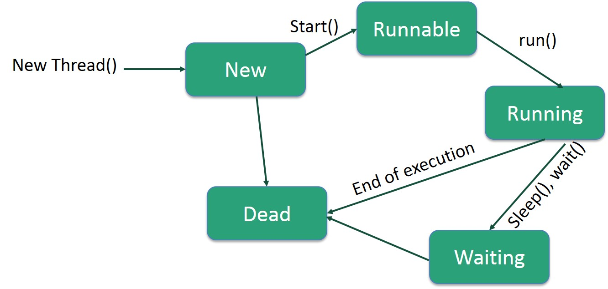

Java - Multithreading
Java is a multi-threaded programming language which means we can develop multi-threaded program using Java. A multi-threaded program contains two or more parts that can run concurrently and each part can handle a different task at the same time making optimal use of the available resources specially when your computer has multiple CPUs.
By definition, multitasking is when multiple processes share common processing resources such as a CPU. Multi-threading extends the idea of multitasking into applications where you can subdivide specific operations within a single application into individual threads. Each of the threads can run in parallel. The OS divides processing time not only among different applications, but also among each thread within an application.
Multi-threading enables you to write in a way where multiple activities can proceed concurrently in the same program.
Life Cycle of a Thread
A thread goes through various stages in its life cycle. For example, a thread is born, started, runs, and then dies. The following diagram shows the complete life cycle of a thread.
Following are the stages of the life cycle −
New − A new thread begins its life cycle in the new state. It remains in this state until the program starts the thread. It is also referred to as a born thread.
Runnable − After a newly born thread is started, the thread becomes runnable. A thread in this state is considered to be executing its task.
Waiting − Sometimes, a thread transitions to the waiting state while the thread waits for another thread to perform a task. A thread transitions back to the runnable state only when another thread signals the waiting thread to continue executing.
Timed Waiting − A runnable thread can enter the timed waiting state for a specified interval of time. A thread in this state transitions back to the runnable state when that time interval expires or when the event it is waiting for occurs.
Terminated (Dead) − A runnable thread enters the terminated state when it completes its task or otherwise terminates.
Thread Priorities
Every Java thread has a priority that helps the operating system determine the order in which threads are scheduled.
Java thread priorities are in the range between MIN_PRIORITY (a constant of 1) and MAX_PRIORITY (a constant of 10). By default, every thread is given priority NORM_PRIORITY (a constant of 5).
Threads with higher priority are more important to a program and should be allocated processor time before lower-priority threads. However, thread priorities cannot guarantee the order in which threads execute and are very much platform dependent.
Create a Thread by Implementing a Runnable Interface
If your class is intended to be executed as a thread then you can achieve this by implementing a Runnable interface. You will need to follow three basic steps −
Step 1
As a first step, you need to implement a run() method provided by a Runnable interface. This method provides an entry point for the thread and you will put your complete business logic inside this method. Following is a simple syntax of the run() method −
public void run( )
Step 2
As a second step, you will instantiate a Thread object using the following constructor −
Thread(Runnable threadObj, String threadName);
Where, threadObj is an instance of a class that implements the Runnable interface and threadName is the name given to the new thread.
Step 3
Once a Thread object is created, you can start it by calling start() method, which executes a call to run( ) method. Following is a simple syntax of start() method −
void start();
Example
Here is an example that creates a new thread and starts running it −
class RunnableDemo implements Runnable {
private Thread t;
private String threadName;
RunnableDemo( String name) {
threadName = name;
System.out.println("Creating " + threadName );
}
public void run() {
System.out.println("Running " + threadName );
try {
for(int i = 4; i > 0; i--) {
System.out.println("Thread: " + threadName + ", " + i);
// Let the thread sleep for a while.
Thread.sleep(50);
}
}catch (InterruptedException e) {
System.out.println("Thread " + threadName + " interrupted.");
}
System.out.println("Thread " + threadName + " exiting.");
}
public void start () {
System.out.println("Starting " + threadName );
if (t == null) {
t = new Thread (this, threadName);
t.start ();
}
}
}
public class TestThread {
public static void main(String args[]) {
RunnableDemo R1 = new RunnableDemo( "Thread-1");
R1.start();
RunnableDemo R2 = new RunnableDemo( "Thread-2");
R2.start();
}
}
This will produce the following result −
Output
Creating Thread-1 Starting Thread-1 Creating Thread-2 Starting Thread-2 Running Thread-1 Thread: Thread-1, 4 Running Thread-2 Thread: Thread-2, 4 Thread: Thread-1, 3 Thread: Thread-2, 3 Thread: Thread-1, 2 Thread: Thread-2, 2 Thread: Thread-1, 1 Thread: Thread-2, 1 Thread Thread-1 exiting. Thread Thread-2 exiting.
Create a Thread by Extending a Thread Class
The second way to create a thread is to create a new class that extends Thread class using the following two simple steps. This approach provides more flexibility in handling multiple threads created using available methods in Thread class.
Step 1
You will need to override run( ) method available in Thread class. This method provides an entry point for the thread and you will put your complete business logic inside this method. Following is a simple syntax of run() method −
public void run( )
Step 2
Once Thread object is created, you can start it by calling start() method, which executes a call to run( ) method. Following is a simple syntax of start() method −
void start( );
Example
Here is the preceding program rewritten to extend the Thread −
class ThreadDemo extends Thread {
private Thread t;
private String threadName;
ThreadDemo( String name) {
threadName = name;
System.out.println("Creating " + threadName );
}
public void run() {
System.out.println("Running " + threadName );
try {
for(int i = 4; i > 0; i--) {
System.out.println("Thread: " + threadName + ", " + i);
// Let the thread sleep for a while.
Thread.sleep(50);
}
}catch (InterruptedException e) {
System.out.println("Thread " + threadName + " interrupted.");
}
System.out.println("Thread " + threadName + " exiting.");
}
public void start () {
System.out.println("Starting " + threadName );
if (t == null) {
t = new Thread (this, threadName);
t.start ();
}
}
}
public class TestThread {
public static void main(String args[]) {
ThreadDemo T1 = new ThreadDemo( "Thread-1");
T1.start();
ThreadDemo T2 = new ThreadDemo( "Thread-2");
T2.start();
}
}
This will produce the following result −
Output
Creating Thread-1 Starting Thread-1 Creating Thread-2 Starting Thread-2 Running Thread-1 Thread: Thread-1, 4 Running Thread-2 Thread: Thread-2, 4 Thread: Thread-1, 3 Thread: Thread-2, 3 Thread: Thread-1, 2 Thread: Thread-2, 2 Thread: Thread-1, 1 Thread: Thread-2, 1 Thread Thread-1 exiting. Thread Thread-2 exiting.
Thread Methods
Following is the list of important methods available in the Thread class.
| Sr.No. | Method & Description |
|---|---|
| 1 | public void start() Starts the thread in a separate path of execution, then invokes the run() method on this Thread object. |
| 2 | public void run() If this Thread object was instantiated using a separate Runnable target, the run() method is invoked on that Runnable object. |
| 3 | public final void setName(String name) Changes the name of the Thread object. There is also a getName() method for retrieving the name. |
| 4 | public final void setPriority(int priority) Sets the priority of this Thread object. The possible values are between 1 and 10. |
| 5 | public final void setDaemon(boolean on) A parameter of true denotes this Thread as a daemon thread. |
| 6 | public final void join(long millisec) The current thread invokes this method on a second thread, causing the current thread to block until the second thread terminates or the specified number of milliseconds passes. |
| 7 | public void interrupt() Interrupts this thread, causing it to continue execution if it was blocked for any reason. |
| 8 | public final boolean isAlive() Returns true if the thread is alive, which is any time after the thread has been started but before it runs to completion. |
The previous methods are invoked on a particular Thread object. The following methods in the Thread class are static. Invoking one of the static methods performs the operation on the currently running thread.
| Sr.No. | Method & Description |
|---|---|
| 1 | public static void yield() Causes the currently running thread to yield to any other threads of the same priority that are waiting to be scheduled. |
| 2 | public static void sleep(long millisec) Causes the currently running thread to block for at least the specified number of milliseconds. |
| 3 | public static boolean holdsLock(Object x) Returns true if the current thread holds the lock on the given Object. |
| 4 | public static Thread currentThread() Returns a reference to the currently running thread, which is the thread that invokes this method. |
| 5 | public static void dumpStack() Prints the stack trace for the currently running thread, which is useful when debugging a multithreaded application. |
Example
The following ThreadClassDemo program demonstrates some of these methods of the Thread class. Consider a class DisplayMessage which implements Runnable −
// File Name : DisplayMessage.java
// Create a thread to implement Runnable
public class DisplayMessage implements Runnable {
private String message;
public DisplayMessage(String message) {
this.message = message;
}
public void run() {
while(true) {
System.out.println(message);
}
}
}
Following is another class which extends the Thread class −
// File Name : GuessANumber.java
// Create a thread to extentd Thread
public class GuessANumber extends Thread {
private int number;
public GuessANumber(int number) {
this.number = number;
}
public void run() {
int counter = 0;
int guess = 0;
do {
guess = (int) (Math.random() * 100 + 1);
System.out.println(this.getName() + " guesses " + guess);
counter++;
} while(guess != number);
System.out.println("** Correct!" + this.getName() + "in" + counter + "guesses.**");
}
}
Following is the main program, which makes use of the above-defined classes −
// File Name : ThreadClassDemo.java
public class ThreadClassDemo {
public static void main(String [] args) {
Runnable hello = new DisplayMessage("Hello");
Thread thread1 = new Thread(hello);
thread1.setDaemon(true);
thread1.setName("hello");
System.out.println("Starting hello thread...");
thread1.start();
Runnable bye = new DisplayMessage("Goodbye");
Thread thread2 = new Thread(bye);
thread2.setPriority(Thread.MIN_PRIORITY);
thread2.setDaemon(true);
System.out.println("Starting goodbye thread...");
thread2.start();
System.out.println("Starting thread3...");
Thread thread3 = new GuessANumber(27);
thread3.start();
try {
thread3.join();
}catch(InterruptedException e) {
System.out.println("Thread interrupted.");
}
System.out.println("Starting thread4...");
Thread thread4 = new GuessANumber(75);
thread4.start();
System.out.println("main() is ending...");
}
}
This will produce the following result. You can try this example again and again and you will get a different result every time.
Output
Starting hello thread... Starting goodbye thread... Hello Hello Hello Hello Hello Hello Goodbye Goodbye Goodbye Goodbye Goodbye .......
Major Java Multithreading Concepts
While doing Multithreading programming in Java, you would need to have the following concepts very handy −